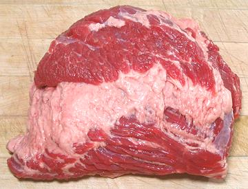

This is the preferred (and higher price) brisket cut, rectangular and nearly uniform in thickness. It is moderately tough and usually used braised or roasted. The photo specimen was 8-1/2 x 5-1/2 x 1-1/2 inches and weighed 2 pounds 1-1/2 ounces, a fairly small size for this cut.
These are also made into corned beef, and during the week leading up to St. Patrick's Day they may be on sale, but at a considerably higher price than the Point Cut.
More on Cuts of Beef

This is the end of the whole brisket up near the separation between the shank and shoulder. The photo specimen is actually a Corned Beef Point Cut, "Deckle-on". You can see there is a thick layer of fat with a thin layer of meat over it. This is normally removed (deckle-off) for fresh cuts, in which case there would be little fat and the cut would be flatter, more like the Flat Cut, but not so rectangular.
The photo specimen was 8 x 6-3/4 x 2-1/2 inches and weighed 3 pounds 3-3/4 ounces. This is a rather large size for a point cut - but, when corned beef point cuts are on sale the week before St. Patrick's Day, there is usually a 2 package limit, so I buy the biggest ones they have.
More on Cuts of Beef
Point Cut Brisket is not common fresh in markets here in Southern California, but is sold (along with much more expensive Flat Cut) as "corned" (salted) beef, very popular for the U.S. / Canadian St. Patrick's Day dish Corned Beef and Cabbage. This is not an Irish dish (the St. Patrick's day celebration isn't Irish either), but the Irish have started offering it due to tourist demand. They've even started putting on North American style St. Patrick's Day celebrations (formerly all the pubs were closed on St. Patrick's Day) - got to keep those tourist dollars rolling in, you know.
ab_briskz 131028 - www.clovegarden.com